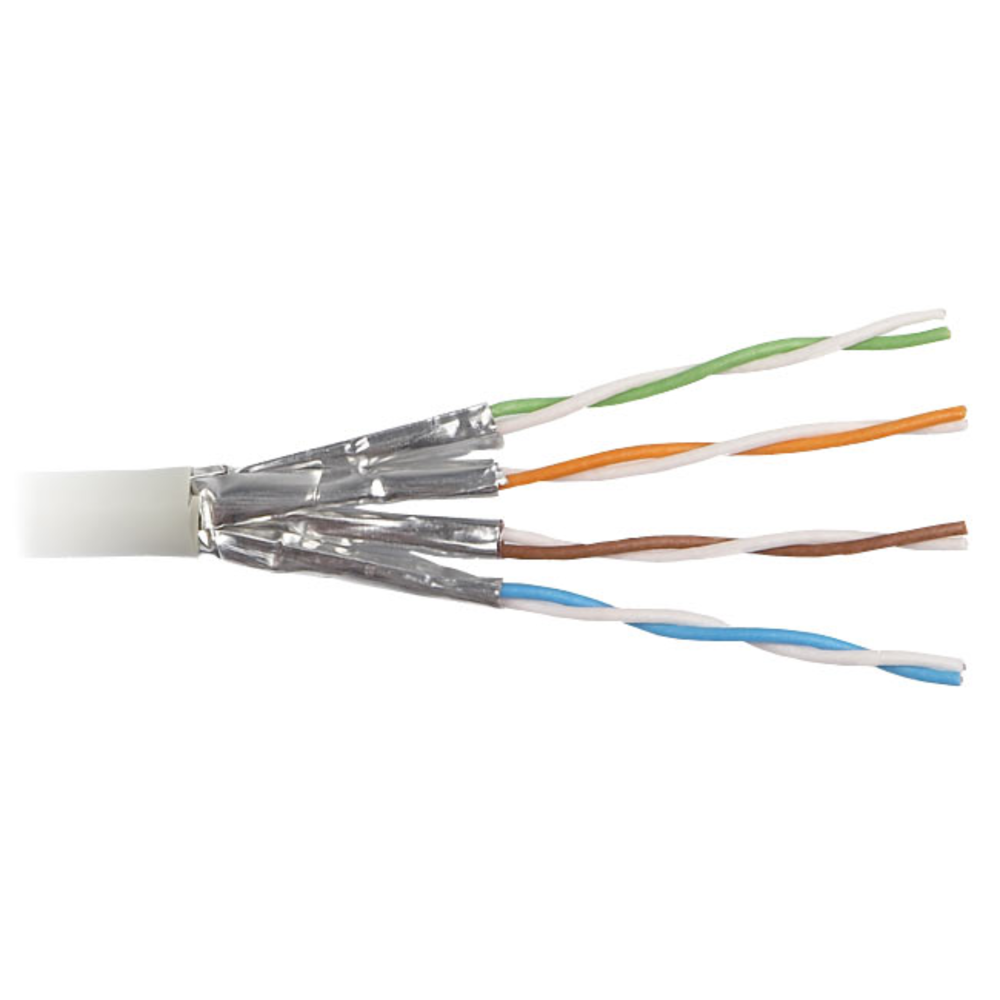

Kabel STP
Pengertian Kabel STP
Kabel STP adalah singkatan dari Shielded Twisted Pair. Secara konsep dasar mirip dengan kabel UTP, namun memiliki pelindung tambahan berupa bungkusan lapisan logam tipis (aluminium foil) di bagian dalamnya.
Bekerja pada Layer 1 (Physical Layer) model OSI. Lapisan pelindung khusus (shield) ini disematkan untuk memblokir gangguan gangguan interferensi elektromagnetik (EMI) luar serta derau radio frekuensi tingkat tinggi.
Spesifikasi Umum
- Dilengkapi pembungkus pelindung internal (foil shield) tunggal atau ganda mengelilingi inti tembaga.
- Umumnya menggunakan konektor logam RJ45 Shielded yang mendukung pembumian (grounding) listrik statis.
- Memiliki diameter kabel yang cenderung lebih tebal, kaku, dan bobot lebih berat dibandingkan UTP biasa.
- Bahan jaket pelindung luar didesain lebih tebal agar tahan gesekan atau cuaca ekstrem luar ruangan.
Keunggulan Kabel STP
- Sangat Tahan Interferensi: Mampu mempertahankan kecepatan dan keutuhan paket data meskipun dipasang berdekatan dengan kabel listrik tegangan tinggi.
- Lebih Awet: Ketahanan fisik fisiknya jauh lebih kokoh karena material jaket pembungkus luar berlapis tebal.
- Kecepatan Maksimal Luar Ruangan: Menghindari degradasi penurunan sinyal data akibat radiasi gelombang udara bebas.
Aplikasi / Implementasi Lapangan
Dalam industri teknik jaringan, kabel STP direkomendasikan untuk instalasi berikut:
- Jalur instalasi luar ruangan (outdoor) yang ditarik antar-tiang gedung sekolah.
- Menghubungkan perangkat Access Point Outdoor yang berada di atas menara tower BTS radio.
- Pemasangan di area lantai pabrik industri yang penuh dengan mesin bermedan magnet tinggi.
Sumber Materi
- Buku Teks Infrastruktur Jaringan Telekomunikasi Kurikulum SMK.
- Panduan Standar Internasional Desain Pengabelan Terstruktur Jaringan Komputer.